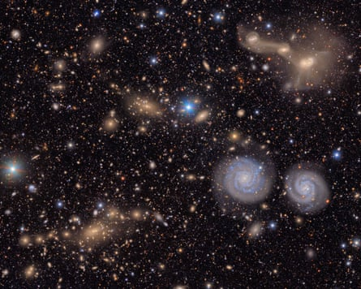

Spectacular views of distant galaxies, giant dust clouds and hurtling asteroids have been revealed in the first images captured by a groundbreaking telescope that is embarking on a 10-year survey of the cosmos.
The stunning pictures from the $810m (£595m) Vera C Rubin observatory in Chile mark the start of what astronomers believe will be a gamechanging period of discovery as the telescope sets about compiling the best view yet of the universe in action.
In about 10 hours of observations, the observatory spotted 2,104 previously unspotted asteroids in our solar system, including seven near-Earth asteroids, which were said to pose no danger to the planet.
“I’m absolutely blown away. Just look, it’s teeming with gorgeous glittering galaxies!” said Prof Catherine Heymans, an astrophysicist at the University of Edinburgh and Scotland’s astronomer royal.
“I’m so delighted that they chose Virgo for the ‘first look’ as it celebrates a key moment in humanity’s dark matter story. It was 1930s observations of the Virgo and Coma clusters that prompted Fritz Zwicky to conclude there must be extra invisible dark matter out there.”
Built on Cerro Pachón, a mountain in the foothills of the Chilean Andes, the 18-storey observatory is equipped with the largest camera ever built. It will observe the entire southern sky every three to four days and then repeat the process, over and over, for a decade.
The result will be the largest astronomical movie of all time, capturing everything in sight from asteroids, comets and exploding stars to potential new planets and interstellar objects. Whenever the telescope detects a change it will alert astronomers within minutes so they can bring other instruments to bear on the event.
“We’ve never looked at the universe in this way before. You get to see everything that moves, everything that changes in brightness,” said Heymans.
Rubin is a US facility, but the UK is heavily involved as one of three international data facilities that will process about 1.5m images capturing about 10bn stars and galaxies.
During the survey, the Rubin observatory will make trillions of measurements of billions of objects. Looking beyond the Milky Way, astronomers expect to map about 20bn previously unknown galaxies.
Two prominent spiral galaxies (lower right), three merging galaxies (upper right) in the Virgo cluster, as well as several groups of distant galaxies, many stars in the Milky Way galaxy.Photograph: NSF-DOE Vera C Rubin observatory/AFP/Getty
When complete, the full 10-year survey is expected to rack up as much as 500 petabytes of data.
“The power of this observatory is about being able to see so much of the cosmos,” said Prof Aaron Roodman, the deputy director for Rubin construction. “We can almost look anywhere and get an incredible treasure trove of information.”
At the heart of the telescope is a car-sized 3,200 megapixel digital camera. The images it captures are so large it would take 400 ultra-high definition TVs to display one at full size. To see the first images in all their glory, many astronomers made arrangements to view them through their local planetariums.
By layering-up multiple images from the same patch of sky, the telescope’s decade-long Legacy Survey of Space and Time will reveal extremely dim and distant objects. Astronomers are particularly keen to search for a potential Planet Nine, which may lurk far beyond Neptune and orbit the sun every 10,000 to 20,000 years.
The images should also shed light on the dark universe, the 95% of the cosmos attributed to mysterious and invisible components known as dark matter and dark energy. Armed with the images, astronomers will map how dark matter is strewn throughout the universe and how its distribution changes over time. By monitoring millions of exploded stars, scientists will measure the expansion of the universe, and hone their description of the dark energy thought to drive the process.
Far more discoveries are anticipated. The observatory is expect to catalogue about 90,000 new near-Earth asteroids, more than double the number known so far. Among them may be asteroids that risk hitting Earth. Space agencies are planning for such an event, with Rubin central to finding threatening space rocks before they find us.
Many of the images the observatory takes will be crossed with streaks from overflying satellites such as the SpaceX Starlinks. But automated algorithms will spot the tracks and blot them out, with minimal impact on the scientific analyses.
“Rubin is a workhorse,” Heymans said. “This is the kit that we’ve been working towards. “This is the ultimate telescope.”